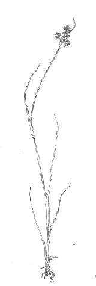

History
Dr. Andrew Charles Moore initiated the University of South Carolina's herbarium in 1907. The herbarium was initially located in LeConte College on the east end of the USC campus, later to be moved to the "old" Coker Biology Building at the west end of the Horseshoe, and finally to its present location in the "new" Coker Life Sciences Building on Sumter Street. The herbarium was named in Moore's honor in 1986.
The herbarium has formed the nucleus for much of the botanical research that has taken place at USC. During the 1950s and 1960s, substantial additions to the collection were made by Wade T. Batson, his colleagues, and his students. Important sets of collections have been made by Richard Porcher, John Logue, John Fairey, John Barry, Janice Coffee, Michael Dennis, Douglas Rayner, John Clonts, Cynthia Aulbach, John Nelson, Albert Pittman, Douglas Kennemore, and others. The herbarium also houses several special collections which are filed separately: the A. C. Moore Collection, the Brookgreen Gardens Collection, the H. W. Ravenel Collection of Converse College and a collection of type specimens.
By 1990, the herbarium contained 50,000 specimens of vascular plants, bryophytes, and algae. Since then, a collection of several hundred South Carolina lichens has been added. All totaled, the herbarium now houses over 100,000 specimens.
For convenience, the herbarium may be referred to as "USCH", its internationally recognized acronym. For a list of other herbaria throughout the world, visit Index Herbariorum.
|